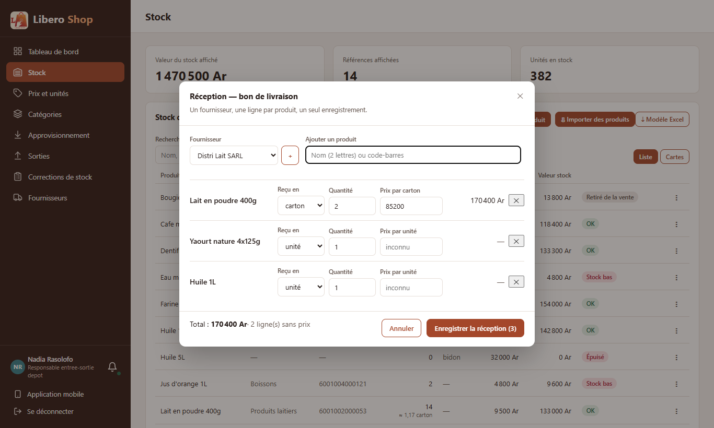
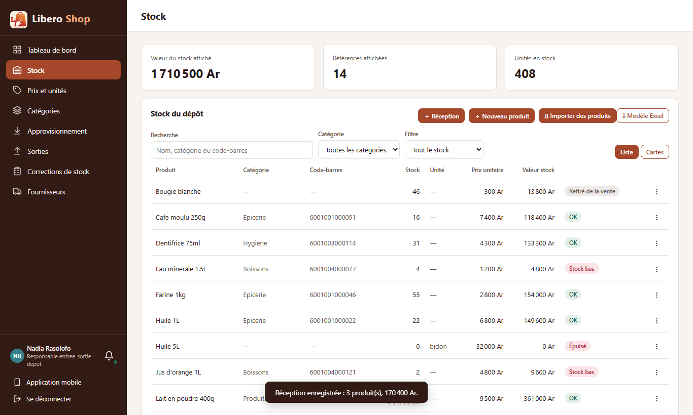
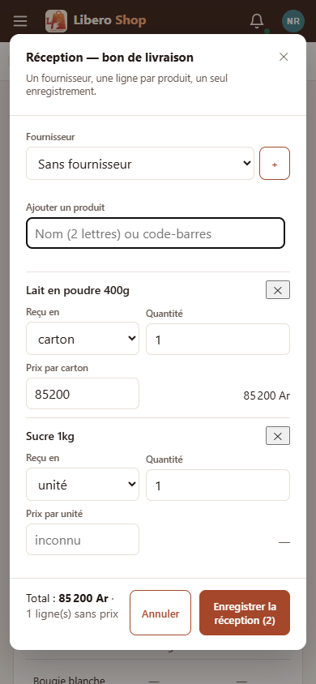

← Tous les comptes rendus de l'interface
UI-31Réception de plusieurs produits en une fenêtre
- Un bouton « ＋ Réception » en haut de la page Stock ouvre un bon de livraison : un fournisseur, puis une ligne par produit.
- Chaque produit s'ajoute en le scannant ou en tapant deux lettres ; scanner deux fois le même carton compte deux cartons.
- Le prix de chaque ligne est prérempli avec le dernier prix payé pour cette unité ; le total du bon s'affiche en bas.
- Un seul « Enregistrer » : tout est enregistré, ou rien si une ligne est refusée. Le bon n'est jamais à moitié saisi.
- La page Approvisionnement garde l'historique des réceptions et la comparaison des prix par fournisseur.
1. Le problème
Un livreur apporte dix produits : il fallait remplir dix fois le formulaire d'approvisionnement, en choisissant chaque fois le fournisseur. Et si la saisie s'arrêtait au milieu, le stock était à moitié à jour.
2. Ce qui a été fait
Côté serveur, chaque ligne est une réception ordinaire (même calcul du coût moyen, même ligne dans l'historique du produit) ; le nouveau service les enregistre ensemble, dans une seule opération. Les produits sont verrouillés dans l'ordre de leur numéro, comme pour une vente, pour que deux réceptions simultanées ne se bloquent pas.
3. Le résultat en images
Nadia — responsable de dépôt Livraison de Distri Lait : deux scans du carton de lait, un yaourt, une huile.



4. À éviter / attendu
5. Tableau récapitulatif
| Fichier | Changement |
|---|---|
backend/…/service/DeliveryService.java | nouveau : toutes les lignes d'un bon dans une seule opération |
backend/…/web/StockController.java, web/dto/CreateDeliveryRequest.java | POST /api/stock/deliveries (responsable de dépôt) |
ui/…/core/stock/delivery-note.ts | nouveau : lignes, +1 au second scan, dernier prix, total |
ui/…/shared/components/delivery-dialog.component.ts | nouveau : la fenêtre « bon de livraison » |
ui/…/features/depot-manager/stock.component.ts | bouton « ＋ Réception » |
ui/…/core/api/stock.api.ts, core/models/api.model.ts | appel et type |
| Règle | Test |
|---|---|
| Chaque ligne entre en stock, dans l'ordre du bon | DeliveryServiceTest — receptionDePlusieursProduitsEnUneFois |
| Une ligne refusée : rien n'entre | DeliveryServiceTest — uneLigneRefuseeRienNEstEnregistre |
| Dernier prix prérempli ; second scan = +1 ; pièce et carton séparés ; total ; prix vide = inconnu | delivery-note.spec.ts |
Tests : serveur au vert (607 tests), interface au vert (261 tests).